Dental Artistry · Bend, Oregon
Restorative & Cosmetic Dentistry Across Bend
Only Board-Certified Dental Implant Specialist in Bend
With offices on both the West Side and East Side, Dental Artistry brings experience & expertise in dental implants and full-mouth reconstruction, alongside a range of restorative and cosmetic services, including All-on-4 treatment, crowns, and veneers to patients throughout Bend, OR.
Find your Bend officeCare, people, and technology in one practice
Experienced dentists
Meet the dentists who will examine your oral health, discuss your goals, and explain suitable treatment options.
In-house digital lab
Our dental laboratory supports the planning and creation of selected restorations within the practice.
Start With Complimentary Consultation
Tell us what you need. We can explain the next appointment, what it includes, and how to request a treatment estimate.
Broad dental care
Explore everyday, cosmetic, restorative, and emergency dentistry through our two Bend offices.
Comfort options
Ask our team about dental sedation and which approach, if any, is appropriate for your treatment.
Patient perspectives
What our patients say about us
Hear two patients describe their experiences with Dental Artistry. Every patient’s care is different.
Complete dental services
Explore care by category
Find restorative, cosmetic, emergency, family, and oral-surgery care offered by Dental Artistry. Your dentist can help you decide what fits your needs.
We use implants to support a full arch of replacement teeth for suitable patients.
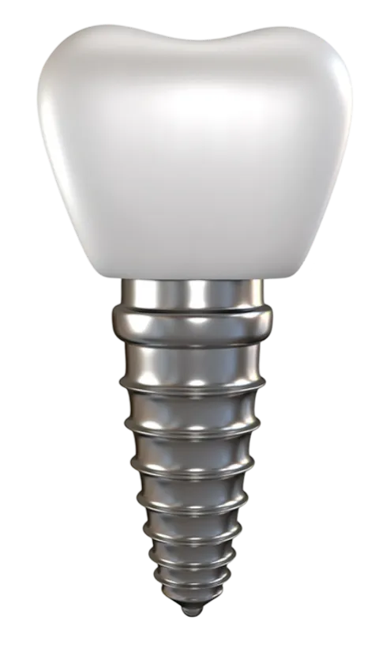
Missing-tooth careDental implantsWe use dental implants to replace missing teeth and support crowns, bridges, or dentures.
Replacement optionsDenturesDentures replace several or all missing teeth and can help with eating and speaking.
Tooth restorationDental crowns and bridgesCrowns cover damaged teeth, while bridges can replace one or more missing teeth.
Preserving a toothRoot canalRoot canal treatment addresses infection inside a tooth and may help preserve it.
Removing a toothTooth extractionWe remove a tooth when it cannot be preserved or removal is part of the care plan.
Jaw and bite concernsTMD/TMJWe evaluate jaw pain, clicking, and bite concerns to discuss suitable care.
Porcelain veneers can change the visible shape, size, and color of front teeth.
Tooth alignmentClear alignersRemovable clear aligners gradually move teeth according to an individual treatment plan.
Tooth colorTeeth whiteningWe offer professional whitening to lighten stains on natural teeth.
Small repairsDental bondingTooth-colored bonding can repair small chips or change the appearance of a tooth.
Custom restorationsInlays and onlaysCustom inlays and onlays restore damaged areas of a tooth when a filling may not be enough.
We check your teeth, gums, and bite and discuss any changes or concerns.
Cavity careDental fillingsFillings repair teeth affected by cavities or other small areas of damage.
Gum healthGum disease treatmentWe assess and treat gum inflammation and infection to support your oral health.
Preventive careTeeth cleaningProfessional cleanings remove plaque and tartar that daily brushing can miss.
Need another treatment? View all services.
People behind your care
Meet the dentists
Get to know the Dental Artistry team before your visit. Your care begins with a conversation about what you need.
Dr. Alexander Smith
Dentist
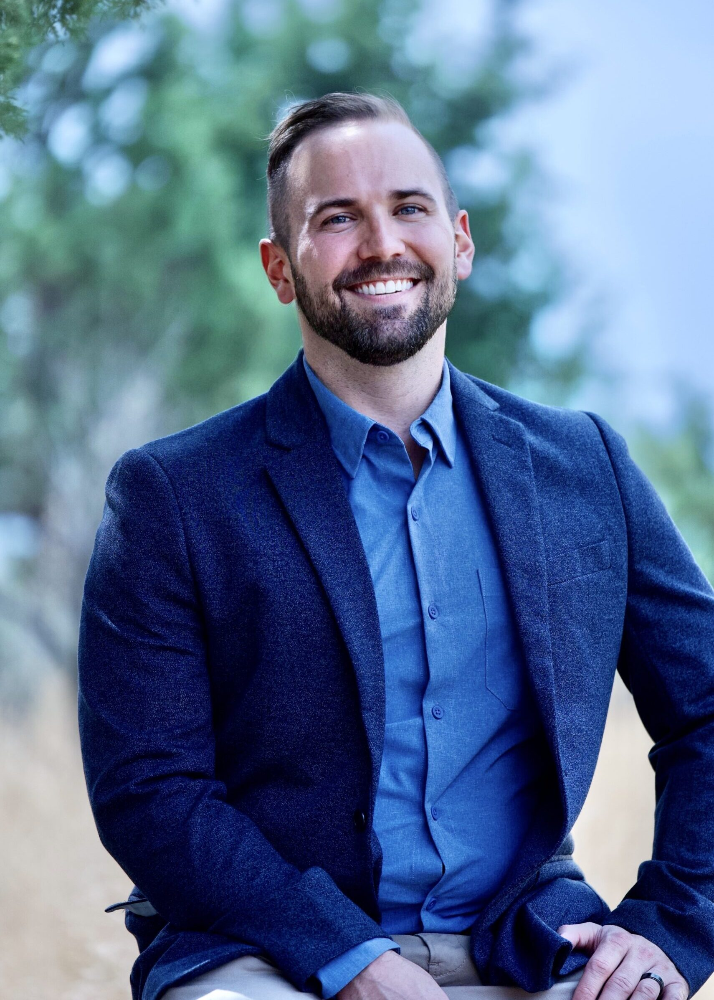
Dr. Thomas Spoonster
Dentist
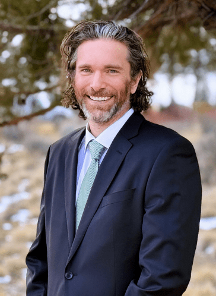
Dr. Sean Bannan
Dentist
Implant dentistry
Recognized for implant expertise
Dr. Alexander Smith earned the Diplomate credential from the American Board of Oral Implantology/Implant Dentistry. The board describes this designation as its highest level of competence in implant dentistry. His implant-focused training is part of the experience he brings to patients in Bend.
See the board’s 2024 announcement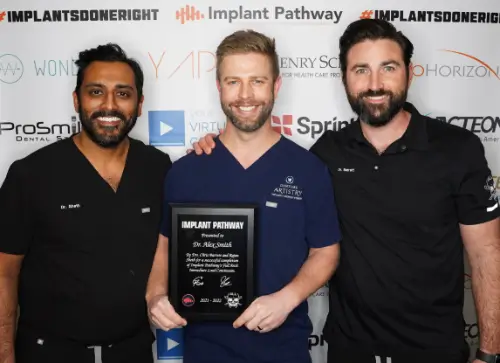
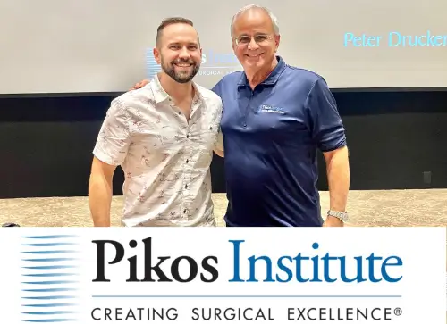
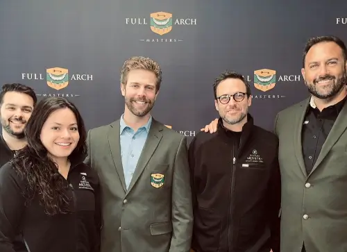
Designed around your care
A closer look at our in-house lab
Our in-house digital dental laboratory supports the planning and creation of selected restorations. Our dentists and lab team can discuss how that process fits your individual treatment plan.
Explore our technologyInside Dental Artistry
Technology behind your care
Our digital lab and clinical tools help the team examine, plan, design, and make selected restorations. Your dentist will explain which tools matter for your care.
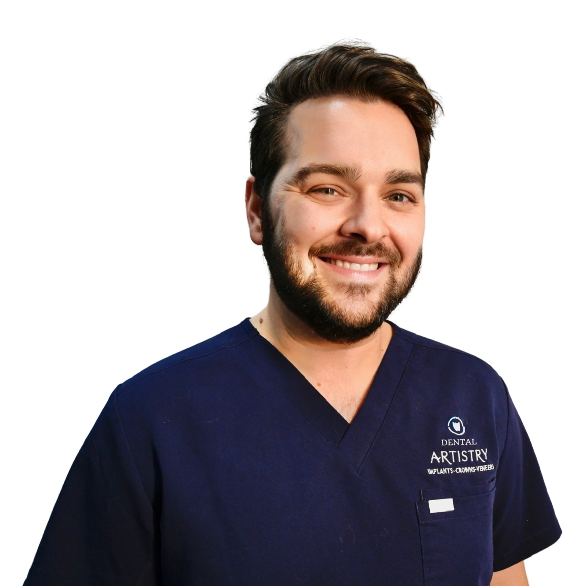
The person behind the lab
Meet Jon Burke
Director of Laboratory Prosthetics
Jon works with the dentists on the digital design and fabrication of selected crowns and implant restorations, bringing the lab’s planning and craftsmanship into the treatment process.
Meet our lab team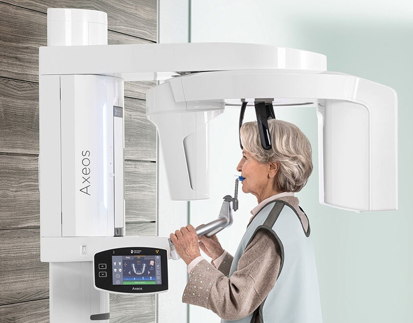
2D and 3D imaging
The Axeos system provides views that help the dentist assess anatomy and plan care when imaging is needed.
Explore Axeos imaging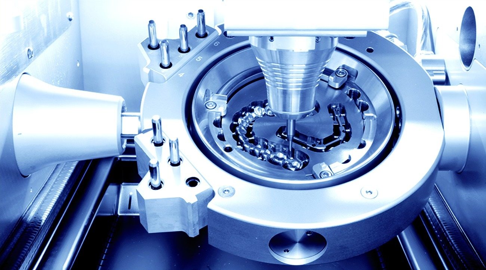
Digital milling
The Zirkonzahn M1 helps the lab mill materials for selected crowns and full-arch restorations.
Explore the M1 mill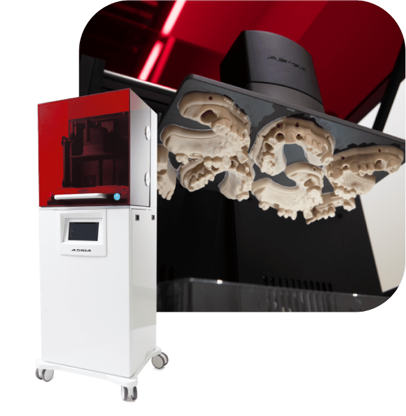
Dental 3D printing
The Asiga MAX UV supports production of dental models, guides, and other components in the digital workflow.
Explore 3D printing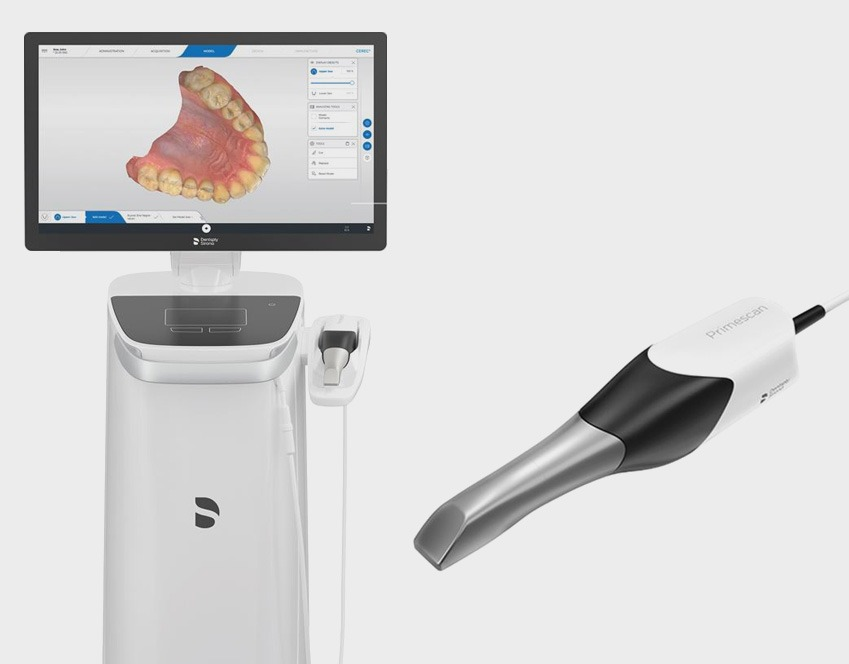
Digital scanning
CEREC Primescan captures digital impressions to help the team plan selected ceramic restorations.
Explore digital scanning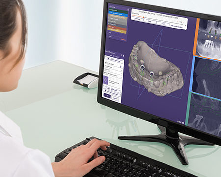
Restoration design
Exocad software helps the lab design and review the form of selected restorations before fabrication.
Explore digital design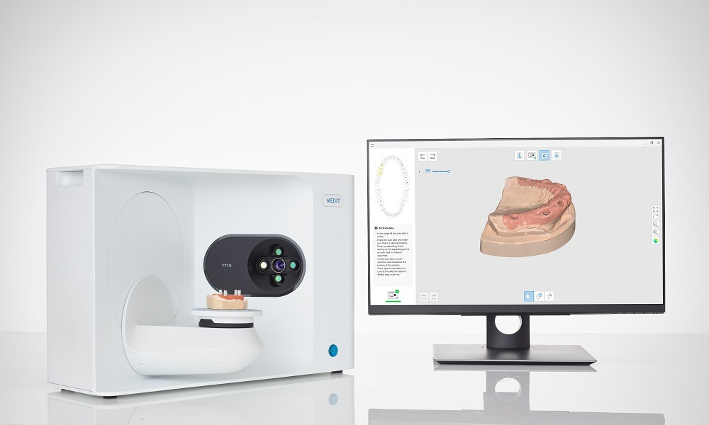
Lab model scanning
The Medit T710 digitizes dental models for use in planning and laboratory fabrication.
Explore model scanningA look inside
Tour the office
Take a look inside Dental Artistry before your visit.


Dental Artistry In-House Plan
A Smarter Alternative to Traditional Dental Insurance
Explore the practice’s in-house membership plan, including what it offers and how it works. Review the current terms with Dental Artistry before enrolling.
Explore the In-House PlanYour first step
Tell us what you need
Share the reason for your visit, and our team can help you plan care at the Bend office that works for you.
Contact Dental ArtistryVisit us in Bend
Choose your office
Both offices are open Monday through Friday, 9:00 AM to 5:00 PM. Find the address and directions that work for your visit.
NW York Drive
Visit our office on Bend’s West Side for cosmetic and restorative dentistry. Tell us what you would like to change or repair, and we can discuss your options.
812 NW York Dr #100Bend, OR 97703
Monday–Friday · 9:00 AM–5:00 PM
Saturday–Sunday · Closed
NE Medical Center Drive
Our office on Bend’s East Side offers cosmetic and restorative dentistry, too. Start with your concerns and goals, and our team can help you plan the next step.
1239 NE Medical Center Dr #220Bend, OR 97701
Monday–Friday · 9:00 AM–5:00 PM
Saturday–Sunday · Closed
We are here to help
Let’s plan your next visit
Request an appointment or call to tell us what kind of dental care you need in Bend.